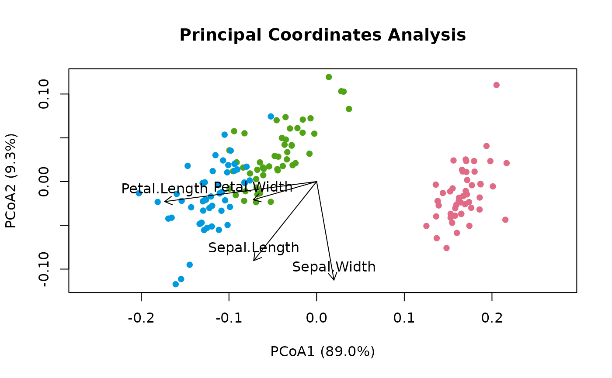

Projects the features of a table, such as taxa, onto the axes of a
pcoa() ordination, so that the features driving each axis can be drawn
as arrows over the samples. Computes the same scores as pcoa_biplot()
in the Python package scikit-bio.
Usage
pcoa_biplot(
ord,
counts,
margin = 1L,
norm = "none",
pseudocount = NULL,
cpus = n_cpus()
)Arguments
- ord
The result of
pcoa(), with anycorrection.- counts
A table of the samples in
ord(samples \(\times\) features whenmargin = 1): usually the feature table thatord's distances came from, or environmental variables. Any of the forms described in "Input Types" below. Must not containNAs.- margin
The margin containing samples.
1if samples are rows,2if samples are columns. Ignored whencountsis a special object class (e.g.phyloseq). Default:1- norm
How to transform each sample's values before projecting them:
'none': As given, as in scikit-bio.'percent': Relative abundance (sample abundances sum to 1).'chord': Each sample scaled to unit length (Euclidean norm 1).'hellinger': Square root of relative abundance (the Hellinger transformation).'binary': Presence/absence (each count is either 0 or 1).'clr': Centered log ratio.'rclr': Robust centered log ratio. Zeros stay 0.
Default:
'none'.- pseudocount
Value added to counts to handle zeros when
norm = 'clr'or'log'. Ignored for other normalization methods. See Pseudocount section.- cpus
How many parallel processing threads should be used. The default,
n_cpus(), is the CPU cores this R process may use, within any limits set on it. Results are the same for anycpus.
Value
A numeric matrix with one row per feature, named after the
features, and one column per axis of ord, named as ord's columns
("PCoA1", "PCoA2", ...). Each row is the tip of that feature's
arrow. Its attribute method is "pcoa_biplot".
Details
Method
With \(Y\) the feature table (\(n\) samples by \(p\) features) with
each feature centered, \(Z\) the PCoA coordinates with each axis
standardized (centered and divided by its standard deviation), and
\(\lambda_j\) axis \(j\)'s eigenvalue (attr(ord, 'eig')), the scores
are Legendre and Legendre's (1998) equations 9.44 and 9.55, as in
scikit-bio:
$$S = \frac{1}{n-1} Y^T Z, \qquad
U_{proj} = \sqrt{n-1}\, S\, \mathrm{diag}(\lambda_j^{-1/2})$$
A PCoA axis \(x_j\) has \(\|x_j\|^2 = \lambda_j\), so this is
\(Y^T x_j / \lambda_j\): the covariance of each feature with the axis,
divided by the axis's variance. That is the least-squares slope of the
feature on the axis: how much the feature changes (in the units of
counts, after norm) per unit along the axis. The axes are
uncorrelated, so it is also the feature's coefficient for that axis in a
multiple regression on all of ord's axes. An arrow points in the
direction in which the feature increases, and is longer the faster it
does.
The work is \(O(\mathrm{nnz} \times k)\) for a table with
\(\mathrm{nnz}\) non-zero values and \(k\) axes: sparse tables stay
sparse, and features are processed in parallel. Results are identical
from run to run, for any number of cpus, and for dense and sparse
versions of the same table.
Relation to envfit()
envfit() fits each feature to the ordination too. Its arrows point in
the same direction as these scores, but are scaled to unit length (and
then often by \(\sqrt{r^2}\)), and it tests each fit by permutation.
pcoa_biplot() gives the unscaled slopes, with no permutations, so it is
far faster for large tables.
Drawing a biplot
The scores are in units of counts per ordination unit, so arrows
usually need a common scale factor to fit the plot. Pick the features
with the longest arrows on the axes drawn, as in the example below.
Which table to use
Pass the table in the form the distances saw: the rarefied table if the
distances came from one (see rarefy()), and the same norm as the
distances used. Raw counts give long arrows to abundant taxa, while
norm = 'percent' or 'clr' put taxa on a more even footing. With a
phylogenetic metric, such as UniFrac, the axes reflect the tree as well as
the counts; the scores still show how each feature varies along the axes,
but not how much it contributes to the distances. Environmental variables
in different units should be standardized first, e.g. with scale().
Samples
Samples are matched by name, as in envfit(): counts must have every
sample of ord (rownames(ord)), in any order; any others are ignored.
If either has no sample names, they are matched by position, and must be
equal in number.
Differences from scikit-bio
scikit-bio adds the scores to its ordination object;
pcoa_biplot()returns them as a matrix.scikit-bio multiplies the uncentered table. The two are the same in exact arithmetic (the columns of \(Z\) sum to 0); centering keeps rounding error proportional to each feature's spread rather than to its mean, and a feature with the same value in every sample scores exactly 0.
normoptionally transforms the table first; scikit-bio uses it as given.scikit-bio replaces
NaNscores (fromNaNs in the table) with 0; here a table withNA,NaN, or infinite values is an error.Axes that
pcoa()dropped (eigenvalues that aren't positive) are absent here; scikit-bio returns columns of zeros for them.
As in scikit-bio, an axis whose coordinates have zero standard deviation is divided by 1.
nmds(), tsne(), and umap() have no eigenvalues, so this projection
doesn't apply to them; use envfit().
Input Types
The counts parameter is designed to accept a simple numeric matrix, but
seamlessly supports objects from the following biological data packages:
phyloseqrbiomSummarizedExperimentTreeSummarizedExperiment
For large datasets, standard matrix operations may be slow. See
vignette('performance') for details on using optimized formats
(e.g. sparse matrices) and parallel processing.
Pseudocount
The pseudocount parameter is only relevant when norm = 'clr'
or norm = 'log'.
Zeros are undefined in the centered log-ratio (CLR) transformation and
in the log of proportions. If norm is 'clr' or
'log', pseudocount is NULL (the default), and
zeros are detected, the function uses half the minimum non-zero value
(min(x[x>0]) / 2) and issues a warning.
To suppress the warning, provide an explicit value (e.g., 1), or
replace the zeros first with replace_zeros(), whose
result needs no pseudocount.
Why this matters: The choice of pseudocount is not neutral; it acts as a weighting factor that can significantly distort downstream results, especially for sparse datasets. See Gloor et al. (2017) and Kaul et al. (2017) for open-access discussions on the mathematical implications, or Costea et al. (2014) for the impact on community clustering.
See aitchison for references.
References
Legendre, P., & Legendre, L. (1998). Numerical Ecology (2nd English ed., chap. 9). Elsevier.
scikit-bio development team. scikit-bio: A Bioinformatics Library for Data Scientists, Students, and Developers. https://scikit.bio
Examples
dm <- bray(iris[, 1:4])
ord <- pcoa(dm)
scores <- pcoa_biplot(ord, iris[, 1:4])
scores
#> PCoA1 PCoA2 PCoA3
#> Sepal.Length -5.778706 -7.266865 -1.034818
#> Sepal.Width 1.588488 -9.054336 -2.458405
#> Petal.Length -13.945894 -1.840953 4.618196
#> Petal.Width -5.827864 -1.679216 2.596898
#> attr(,"method")
#> [1] "pcoa_biplot"
# Scale the arrows to the samples' spread, and draw them.
xy <- scores[, 1:2] * 0.8 * max(abs(ord[, 1:2])) / max(abs(scores[, 1:2]))
plot(ord, 'Species', iris)
arrows(0, 0, xy[, 1], xy[, 2], length = 0.1)
text(xy, labels = rownames(xy), pos = 3)
